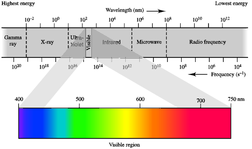
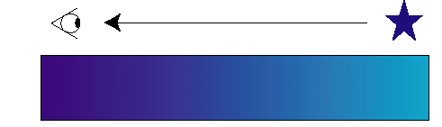
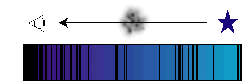
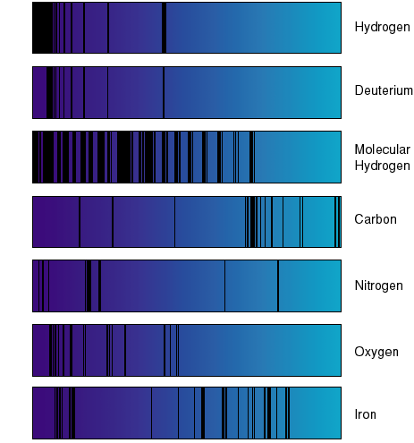
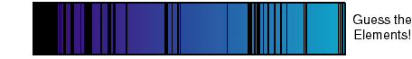

Astronomers learn about the Universe by observing light from distant astronomical objects, like stars or galaxies. Light contains information, and since it is much easier to observe a star than it is to travel to one, there is clearly a benefit to being able to understand what the light is telling us! One of the main tools for studying light is a device called a spectrograph, which breaks light into its component colors, much like raindrops refract sunlight to produce beautiful rainbows in the sky. When attached to a telescope, a spectrograph becomes a powerful tool for learning about the Universe. Luckily for astronomers, this technique can be used with all kinds of light, not just the visible light that our eyes are sensitive to. Different kinds of light, like infrared, ultraviolet, X-ray light, etc., contain different kinds of information. The FUSE satellite uses light in the far-ultraviolet spectral region, light having wavelengths between 90 and 120 nanometers (1 nanometer = 1 billionth of a meter!). For comparison, visible light ranges from about 400 to 700 nanometers (4000 to 7000 Angstroms). In the absence of any intervening material, the light from a star reaches us unobscured. When the light is dispersed into colors by a spectrograph, it may look something like this continuous spectrum, which has a smooth, gradual change of color, and no breaks or dropouts in the intensity of the light: 

These absorption features can be thought of as cosmic barcodes, with each type of atom or molecule producing a different barcode signature. One can then think of a spectrograph as a "barcode reader". Once the barcode produced by a gas cloud has been read, astronomers can interpret what the barcode means. Here are examples of the types of barcodes that are produced by the FUSE spectrographs: 
See if you can guess which elements have left their mark on this spectrum:  When you think you know, check here for the correct answer.
Send mail to Dr. Ken Sembach or Dr. Bill Blair. |